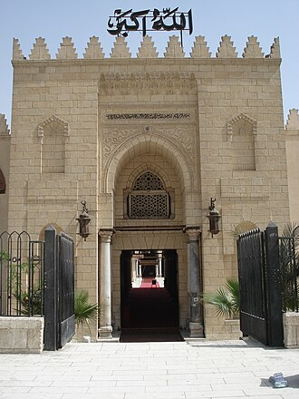

परिचय
La mosquée Amr ibn al-As est située dans le quartier historique du Caire, en Égypte. Modifiée à de nombreuses reprises au cours des siècles, elle se distingue à la fois par son caractère modeste et l'ancienneté de sa fondation : érigée à partir de 642, elle fut la première mosquée construite sur le sol égyptien, et sur le sol africain en général.
جامع عمرو بن العاص أو (مسجد الفتح، المسجد العتيق، تاج الجوامع) هو أحد جوامع القاهرة التاريخية، أنشئ خلال عهد حكم عمرو بن العاص لمصر في مدينة الفسطاط التي أسسها المسلمون كأول عاصمة إسلامية.
The Amr ibn al-As Mosque is a mosque, located in the Fustat neighbourhood of Old Cairo, Egypt. Named in honour of the Arab Muslim commander Amr ibn al-As, the mosque was built in c. 642 CE as the centre of the newly founded capital of Egypt, Fustat. The original structure was the first mosque built in Egypt and one of the first in Africa. For 600 years, the mosque was also an important centre of Islamic learning until it was replaced by al-Muizz's Al-Azhar Mosque in Islamic Cairo. Through the twentieth century, it was the fourth largest mosque in the Islamic world.
Amr bin Âs Camii Hicrî takvime göre 22, miladi takvime göre 642/643 yılında Kahire'nin güneyinde yeni kurulan şehir Fustat'ta Amr bin Âs tarafından inşa edilmiş bir camidir. Amr bin Âs Camii, Mısır ve Afrika'da inşa edilen ilk cami olma özelliğini taşımaktadır. Cami, Amr bin Âs'ın ordugâhının kurulduğu nokta üzerine inşa edilmiştir.
Masjid Amru bin al-Ash adalah sebuah masjid di Kairo, Mesir. Dinamai menurut komandan Muslim Arab Amr bin al-Ash, masjid ini awalnya dibangun pada tahun 641–642 M sebagai pusat ibu kota Mesir yang baru didirikan, Fustat. Bangunan aslinya adalah masjid pertama yang pernah dibangun di Mesir dan salah satu yang pertama di Afrika. Selama 600 tahun, masjid ini juga merupakan pusat pembelajaran Islam yang penting sampai Masjid Al-Azhar al-Muizz di Kairo Islam menggantikannya. Sepanjang abad kedua puluh, itu adalah masjid terbesar keempat di dunia Islam.
مسجد عمرو بن العاص افریقا کے پورے علاقے اور مصر میں قائم کی جانے والی پہلی مسجد ہے۔ یہ مسجد مصر کے فسطاط شہر میں مسلمانوں نے مصر فتح کرنے کے بعد تعمیر کی تھی، اس مسجد کو مسجد فتح، مسجد عتیق اور تاج الجوامع بھی کہا جاتا ہے، جامع عمرو بن العاص دریائے نیل کے مشرقی حصے میں واقع ہے۔
Die Moschee des ʿAmr ibn al-ʿĀs wurde im Jahr 642/643 im Norden der Festung Babylon im Bereich der neu gegründeten Stadt al-Fustat im Süden des heutigen Kairos durch den General ʿAmr ibn al-ʿĀs angelegt. Sie ist der erste Moscheebau in Ägypten und in ganz Afrika. Die Moschee wurde an der Stelle errichtet, an der sich das Zelt des Generals während der Belagerung Babylons befand. Noch im selben Jahr ließ ʿAmr ibn al-ʿĀs eine weitere Moschee in Damiette errichten. Das heutige Erscheinungsbild entspricht nicht mehr dem ursprünglichen Bau: die heutige Moschee stammt aus dem Jahr 1796.
La mezquita de Amr, también conocida como mezquita de Amr ibn al-As, fue construida por primera vez en el año 642 como centro de la recién fundada capital de Egipto, Fustat. La estructura original era la primera mezquita construida en Egipto, y por extensión, la primera mezquita construida en África.
La moschea di ʿAmr ibn al-ʿĀṣ, chiamata anche moschea di ʿAmr, è stata originariamente costruita nel 642 a Fusṭāṭ - capitale dell'Egitto fino ad allora assoggettato al Califfato dei Rashidun - subito dopo la conquista arabo-islamica da parte del generale musulmano coreiscita ʿAmr ibn al-ʿĀṣ. La struttura originale è stata la prima moschea mai costruita in Egitto, e per estensione, la prima moschea nel continente africano. Si tratta di una moschea attiva che, quando le preghiere non sono in atto, è aperta ai visitatori e turisti.
A Mesquita de Anre ibne Alas, mais conhecida apenas como Mesquita de Anre, foi originalmente construída em 642, como o centro da recém-fundada capital do Egito, Fostate. Foi a primeira mesquita construída no Egito e, por extensão, a primeira mesquita no continente da África.
阿慕尔·本·阿绥清真寺，或众清真寺之冠, 或旗手清真寺，或古老清真寺，阿慕尔·本·阿绥清真寺始建于641-642年，是新成立的埃及首都福斯塔特的中心。该清真寺的原始建筑为埃及乃至非洲建立的第一座清真寺，600年来，该清真寺是伊斯兰教育的重要中心之一，直到穆仪兹建立的爱资哈尔清真寺取代其地位；在整个二十世纪期间它都是伊斯兰世界的第四大清真寺。
アムル・イブン・アル＝アース・モスク は、エジプト・カイロ旧市街にあたるフスタートに建設されたモスクである。642年に建設された。
Мечеть Амра ибн аль-Аса или Мечеть Амр, была первоначально выстроена в 642 году как культовый центр первой арабской столицы Египта — города Фустат. Это была первая мечеть не только в Египте, но и во всей Африке.
Moscheea Amr este o moschee din orașul Fustat, Egipt. Aceasta este cea mai veche moschee din Egipt și una din primele moschei din Africa.
कहानियाँ और क़िस्से
लोककथाकबूतरी और तंबू
641 में, ख़लीफ़ा उमर के भेजे सेनापति अम्र इब्न अल-आस ने अलेक्ज़ेंड्रिया की ओर बढ़ने से पहले नील के पूर्वी किनारे पर अपना तंबू गाड़ा। एक मशहूर कहानी के अनुसार, चलने के समय एक कबूतरी ने उनके तंबू में अंडा दे दिया; अम्र ने उसे परेशान करने से मना किया और तंबू खड़ा छोड़ दिया। जीतकर लौटने पर उन्होंने इसी जगह को मिस्र की नई राजधानी बसाने के लिए चुना, जिसका नाम फ़ुस्तात पड़ा, यानी “तंबू”। मस्जिद इस शहर के बीचोंबीच बनाई गई। कबूतरी की कहानी एक किंवदंती है, लेकिन फ़ुस्तात नाम सचमुच मौजूद है।
परंपरामिस्र की पहली मस्जिद
लगभग 641-642 में बनी अम्र की मस्जिद मिस्र की पहली मस्जिद है और अफ़्रीका की सबसे पहली मस्जिदों में से एक। शुरू में यह कच्ची ईंटों का एक साधारण कमरा थी, जिसकी छत खजूर के पत्तों की थी और जो खजूर के तनों पर टिकी थी, बिना मीनार के। परंपरा के अनुसार, मिस्र में मौजूद पैग़ंबर ﷺ के कई सहाबियों ने क़िबले की दिशा तय करने में मदद की। छह सदियों तक यह शिक्षा का भी एक बड़ा केंद्र रही, फिर अल-अज़हर ने यह भूमिका संभाली।
स्रोत: Wikipedia : Mosque of Amr ibn al-As · UNESCO : Historic Cairo
ऐतिहासिक तथ्यशहर जिसे गिरने से बचाने के लिए जला दिया गया
1168 में सलीबी मिस्र के लिए ख़तरा बने हुए थे। तब फ़ातिमी वज़ीर शावर ने फ़ुस्तात में आग लगवा दी, ताकि शहर उनके हाथ न लगे; शहर और मस्जिद आग से तबाह हो गए। सलीबियों के जाने के बाद सलाहुद्दीन ने मिस्र में सत्ता संभाली और 1179 में मस्जिद को फिर से बनवाया। इसे बाद में भी कई बार दोबारा बनाया गया, ख़ास तौर पर 1796 में मामलूक अमीर मुराद बे ने। मौजूदा इमारत में पहली मस्जिद का लगभग कुछ भी नहीं बचा है।
नक़्शे पर
दस्तावेज़ और लिंक
- Wikipédia — Français
- Wikipédia — العربية
- Wikipédia — English
- Wikipédia — Türkçe
- Wikipédia — Bahasa Indonesia
- Wikipédia — اردو
- Wikipédia — Deutsch
- Wikipédia — Español
- Wikipédia — Italiano
- Wikipédia — Português
- Wikipédia — 中文
- Wikipédia — 日本語
- Wikipédia — Русский
- Wikipédia — Română
- Wikidata — Q683511
डेटा: विकिडेटा (CC0), हर 3 महीने में अपडेट। वर्ष इमारत के निर्माण की सबसे पुरानी ज्ञात तिथि है: जो इमारत बाद में मस्जिद बनी (जैसे हागिया सोफ़िया), उसके लिए यह मूल इमारत का वर्ष है। तस्वीरें: विकिमीडिया कॉमन्स, लेखक और लाइसेंस हर तस्वीर के पेज पर।